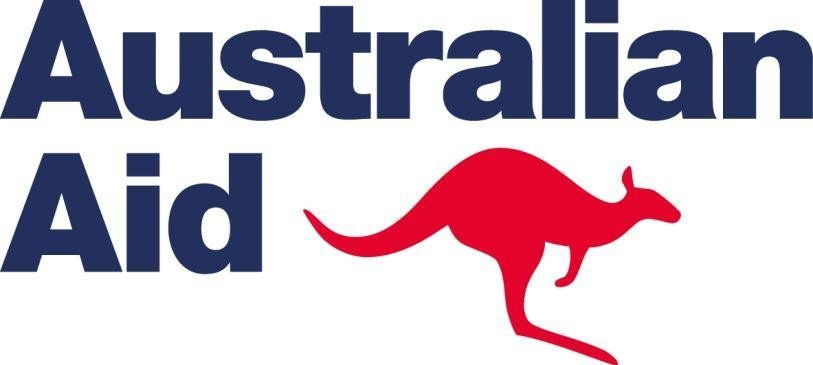
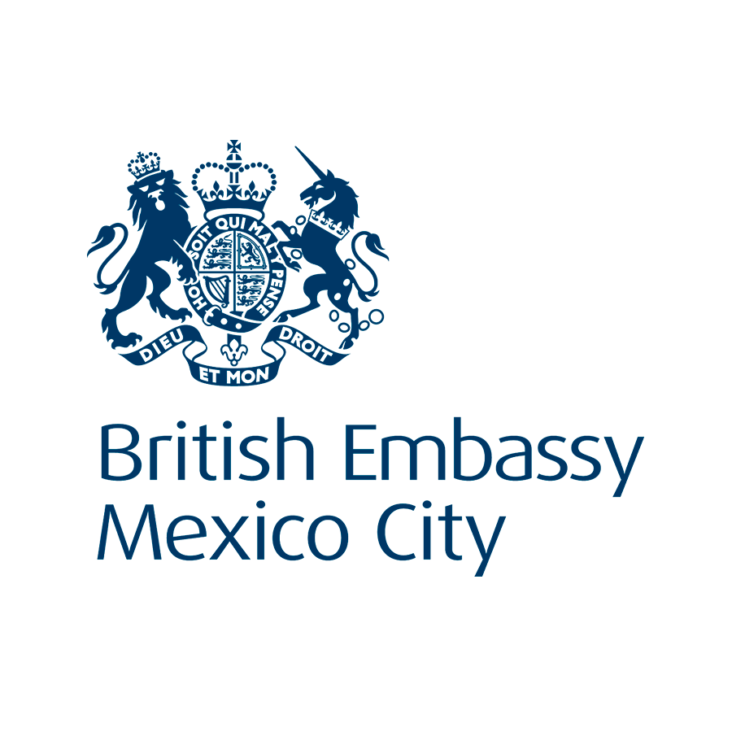

Hello.
I'am and experienced Professional and Certified Buyer specialized
in Management field. I had the opportinity to work for Australian, British Governments
and Universidad Tecmilenio; with a major focus in Administration,
Public Procurement, Logistics, Customer Service and knowledge facilitation. As an Assistant,
I provided reliable administrative support to SAO/Consul,
HR, Finance teams, and I ensured Direct Aid Programe (DAP) had
all the necesary administrative support to deliver capacity building
projects across Mexico, Central America, Cuba and Dominican
Republic. While working, and not interfering with my responsibilities, I lectured Change
Management and Negotiation to bachelor students.
As a procurement specialist, I performed supply market
analysis to identify potential suppliers, developed and
implemented strategies to achieve an efficient use of
resources, as well as overseeing financial performance,
transparency and compliance. As transport & logistics specialist and
in addition to my daily activities, I lead my team to deliver
high quality services with positive outcomes recognized by Top
Management;
My Skills and Professional Experience.

Education
International Relations (W/Hons) Universidad Nacional Autonoma de Mexico
Master in Business, Quality & Productivity – Universidad TecMilenio
Six-Sigma Green Belt – Sigma Pro
Postgraduate in Finance - Universidad TecMilenio
Diploma Course, International Certification in Coaching and teambuilding - ITESM
Diploma Course, International Certification in Project Management - ITESM
Diploma course, International Certification in Supply Chain Management – Certified (WTO-ITC)
Diploma Course in Strategic Management in Procurement and Supply - ITESM
Languages
.png) Spanish – Native speaker
English – British Council (code 5d3c86bf)
French - basic - IFAL
Spanish – Native speaker
English – British Council (code 5d3c86bf)
French - basic - IFAL
Courses
Interviewer skills / Customer Service Skills /From self-Management to Managing others
/ Communication and Assertiveness / Understanding change / Personal Effectiveness /
Introduction to type Myers-Briggs indicator / UK Bribery Act / Time Management /
Team building with MBTI / Foreign Trade Fundamentals / Entrepreneurship / Fraud Awareness
/ Introduction to SAP / PMP preparation / Web development
Professional Experience
Australian Embassy, Mexico City
In coordination with PM, I provided support to Direct Aid Program assessing expressions
of interest vs DAP´s strategic priorities, I helped to design a final report of projects,
using Smartygrants platform, complying with gender perspective reporting, and the final financial
reporting allowing more transparency and traceability of the funds. In a second stage, I helped to
thoroughly investigate bid proposals applying 'due diligence' principles validating information
provided by bidders helping to mitigate risks of fraud in the use of international funds. I also
collaborated to gather supporting documentation regarding full adherence to DFAT's Child Protection
Policy. I recorded and organized, in EDRMS (data storage system) contracts, agreements, quotations,
commercial information, contract variations, creating new files and a directory of all Aid-related
information. In a third stage, I visited implementers to oversee the execution of the project,
interview communities and individuals to ensure good use of tax-payers money. When things were not
aligned according to the plan, I raised my concerns to the organizations and requested action plan
to correct the deviation.

In coordination with PM, I provided support in the sentencing project according to Australia's
Archives Act 1983 that ended in the destruction of documents of diverse classifications some of
them dated back 1995.
In coordination with HR Manager, I provided support to create new employee's induction guide,
organizing and summarizing large amounts of information drafting in a succinct and clear way
all the essential information for new recruits to ensure a smooth integration to the Embassy.

British Embassy, Mexico
Acting Procurement & Contracts Manager
Rationalization of leases contracts creating a calendar with payments due dates, special clauses
to achieve a good contract management and achieving savings. I created Addendums to have in writing
verbal arrangements that were not recorded properly and represent a risk to the Organization.
Revision and correction of purchase orders that prove not to be compliant with current Procurement policies.
Support suppliers’ optimization initiative, where we reduce 70% our suppliers’ base bringing
economic benefits to the Organization by making an efficient use of resources and reducing
administrative costs of all the acquisitions. I drafted a business case to recognize my
intern’s support and she won Americas Directorate for her valuable contribution.
Responsibilities: P2P process / Value For Money / use of Corporate Credit Card and Government
Card with a £5,000.00 limit / Contract management for goods, services, consulting, branding
and leases / Oversee outsourced facilities management suppliers / Oracle iRequisitioning,
OBIEE / Price and commercial terms negotiation and special travel rates agreements, dispute
resolution / Financial and Procurement Compliance Indicators / Transparency and UK’s
Freedom of Information Act 2000 / Advice on Procurement and Tender processes / Supply Market
Research / Supplier identification and development / Budget forecast and monitoring over 4 categories
Transport & Logistics Officer
I helped my team of 5 drivers to develop confidence in their expertise to provide value added
and high quality services by supporting them to reach their personal goals, 3 of 5 got their
High School diploma and started studying English, as a result of this one of my collaborators was
recognized as the employee of the month two times, all of them were won the Americas Directorate
Award and one won Consular Directorate Award.
I draft a successful business case to get the transport fleet renewed in an environment of
budget restrictions.
Responsibilities: Lead a Team of 6 people / Import-Export of Diplomatic Shipments / Liaise with
Mexican authorities on Diplomatic privileges and Protocol, such as accreditations, diplomatic
plates requests, franchise, tax returns and others / Diplomatic bag / Oversee transport agenda
/ Accountable for official transport fleet of 6 cars and 4 AVs / International Law – Diplomatic
Immunities & Privileges compliance as well as extraterritorial law (UK Bribery Act) / Budget
forecast and monitoring of 7 categories
Purchasing & Procurement Officer
I managed to reduce by 60% leasing costs in photocopy equipment vs. previous contract, services
coverage were improved including our offices in Guadalajara and Monterrey as well as maintenance
of owned photocopying machines, generating savings for the Embassy.
I drove change of suppliers of land line telephony services and broadband internet, to obtain
better conditions whether commercial as well as services, and to reduce telecommunication costs
by 40% vs. previous Supplier, having as a result an increase in broadband from 1 megabyte to 10.
I carried out a Market Study of Travel Services suppliers, in which I identified a supplier
that contributed to increase competiveness; additionally I got signed preferred rates agreements
with 25 prestigious Hotels nationwide with the aim to benefit the Embassy with lower travel-related costs.
I developed training courses in Prism (Oracle) to recently hired staff, and scheduled monthly
meetings to set strategies and amend malpractices, as a result, the Embassy achieved high standards
on financial practices during 15 consecutive months regarding Procurement and Compliance indicators.
Responsibilities: Purchase to Pay process / Goods and services Sourcing / Financial and
Procurement Compliance / use of Corporate Credit Card and Government Card with
$100,000.00 MXN and £5.000.00 GBP each / Oracle iProcurement, iRequisition,
OBIEE, Discoverer / Supplier Relationship Management / Efficiency strategies /
Value For Money / Booking of Hotel rooms and flights / Contract Management for
commercial contracts and advice on Tender Procedures / Facilities Management support
/ Supply Market research / Budget responsibility of 4 categories.
Logistics Assistant
I undertook mobile phone plans standardization, based in a previous study of needs
and costs that I did, where it was also possible a reduction of monthly costs by 20%.
I renewed mobile phones Fleet, and in coordination with Supplier, I established
an annual renewal calendar, to avoid further obsolescence, since I spotted that
the fleet was 3 years old; besides, I created for the first time an inventory of
equipments as well as a registry of mobiles assigned and returned for a better control.
I created a diplomatic shipments import’s guide for DHL in the UK, considering International
and local regulations like Vienna Convention, Mexican Customs and Foreign Trade laws, in order
to reduce shipments being detained at the airport for not complying with legal requirements.
I reduced courier services costs by a 30% and, at the same time, delivery coverage was extended
after searching, negotiating and hiring a postal services supplier.
Responsibilities: Official Mobile fleet management and custodian / Diplomatic and standard
courier services / Petrol cards management / Diplomatic shipments assistance /
Diplomatic immunities and privileges assistance / Oracle iRequisitioning